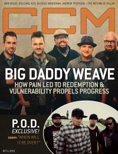

CMnexus
: Contemporary Christian culture, music, and media.
|
Big Daddy WeaveOn the cover
1 October 2015
CCM Digital | Media coverage:- Jan 2003 in Christian Single "Featured Artist: Big Daddy Weave", by Brandy Campbell
- Aug 2003 in CCM "Story Behind the Song: Audience of One", by Dave Urbanski
- Jan 2004 in CCM "Insider: Preach It!"
- Aug 2005 in CCM "Insider: Big Daddy Weave"
- Oct 2006 in CCM "Insider: On The Road Again", by Lizza Connor
- Apr 2012 in CCM Digital "Musicians Corner: In the Studio: Big Daddy Weave"
- May 2012 in CCM Digital "Livin' and Lovin'", by Matt Conner
- Oct 2012 in CCM Digital "Tour Spotlight: Love Come to Life Tour, Decatur Celebration, Decatur, IL", by Andy Argyrakis
- 1 Jul 2014 in CCM Digital "Tour Spotlight: The Only Name Tour, Grace Christian Academy, Kankakee, IL", by Andy Argyrakis
- 1 Oct 2015 in CCM Digital "Post-Redemption Progress", by Lindsay Williams
Albums & reviews:2001: Neighorhoods
2005: What I Was Made For
2006: Every Time I Breathe
2008: What Life Would Be Like
2011: The Ultimate Collection
2014: Love Come to Life: The Redeemed Edition
2014: Live
2015: Beautiful Offerings
Award Summary (Nominations / Wins)
Dove Awards2010 Dove Awards2013 Dove Awards2014 Dove Awards2015 Dove Awards2016 Dove Awards2017 Dove Awards- Song: "The Lion And The Lamb"
- Worship Song: "The Lion and The Lamb"
|
|